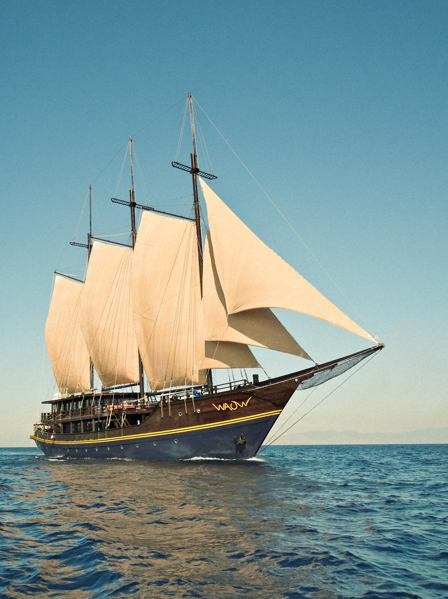
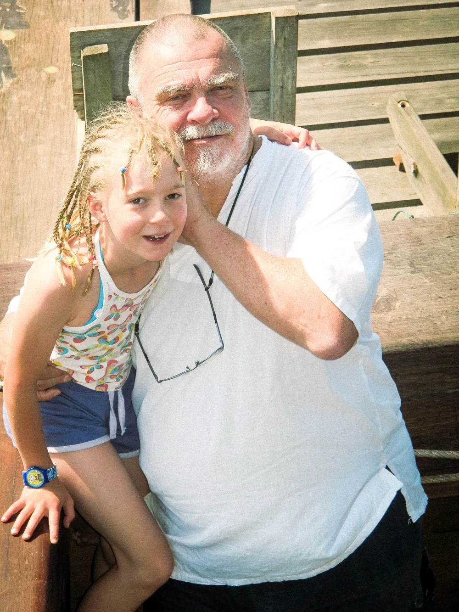
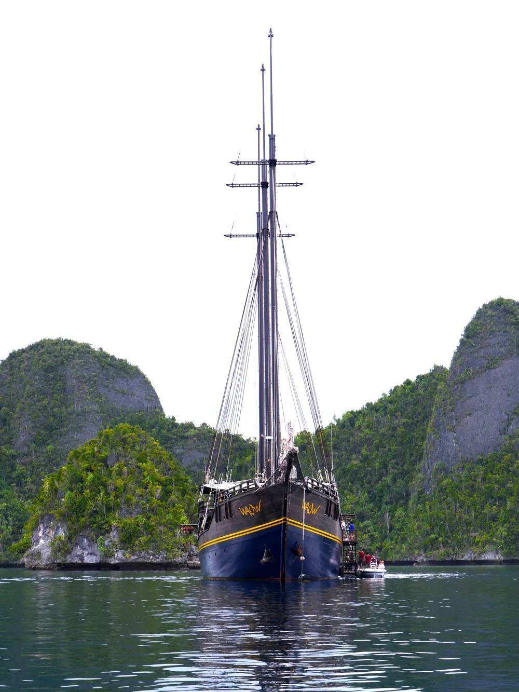
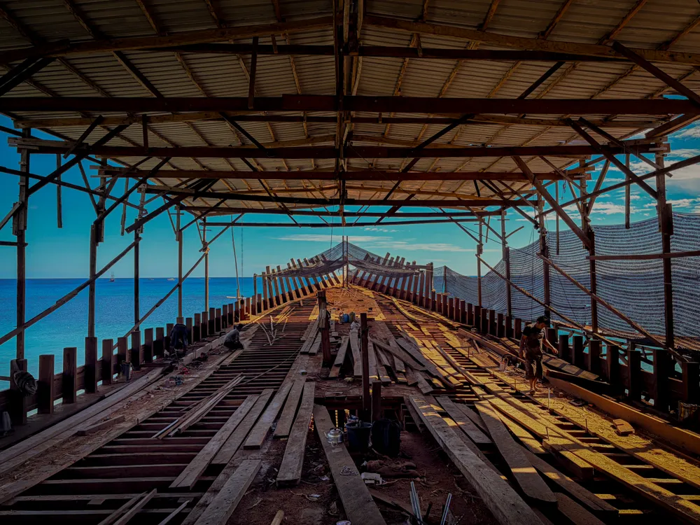
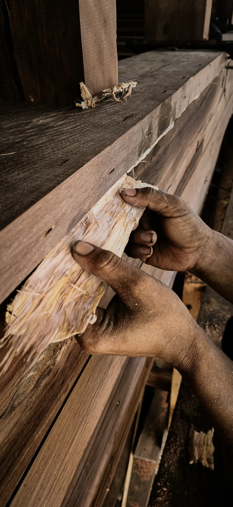
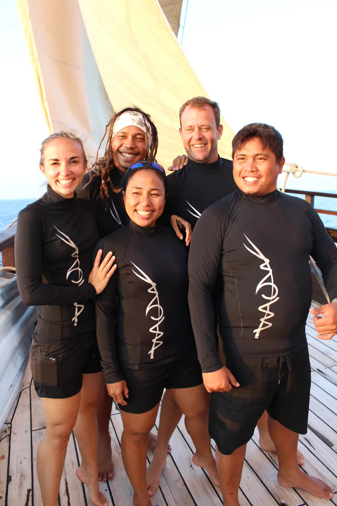
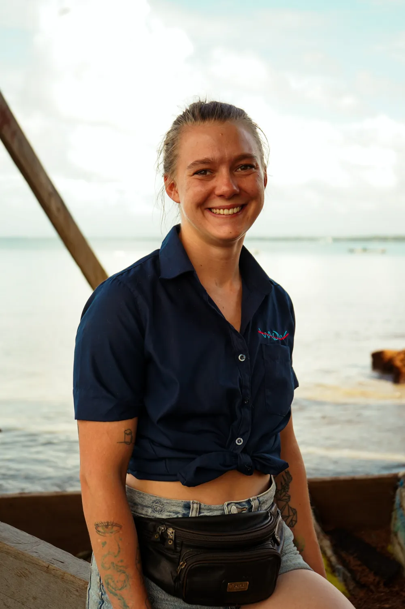
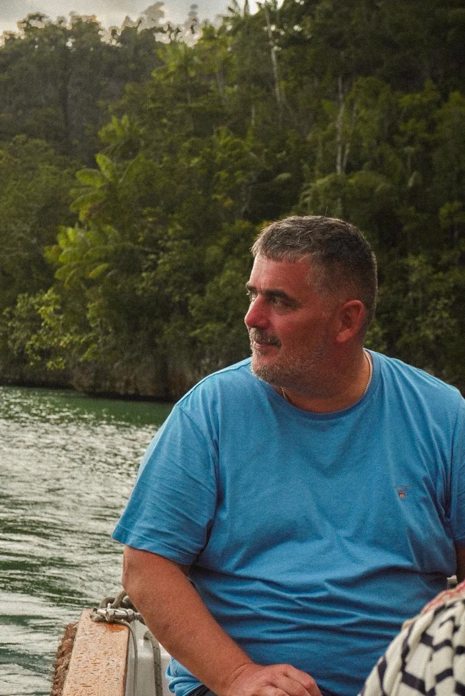
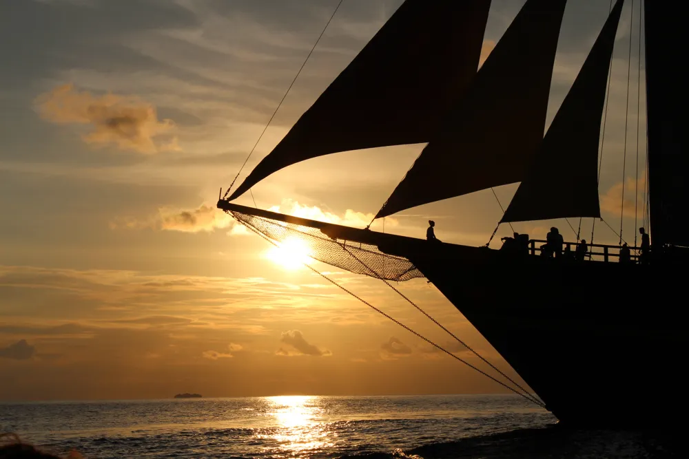

The Waow Story


In 2011, passionate Swiss diver Michel Deville turned a dream into a boat.
From Switzerland to Indonesia, he imagined a vessel that would allow divers to discover
some of the most remote waters in the world, differently, and on a more personal scale.
That dream became WAOW.
The First WAOW
For six years, from 2012 to 2018, WAOW sailed across
Indonesia, from Raja Ampat to Komodo and beyond.
She became much more than a dive boat. She became a home
at sea, a place where divers, guides and crew shared long
days underwater, slow evenings on deck and countless
stories along the way.
Camille grew up with WAOW too.
She spent her summers on board as a child, surrounded by
the sea, the crew and the rhythm of life on a dive boat.
WAOW was part of her childhood, long before it became part
of her future.
Then, in 2018, WAOW was tragically lost to a fire.
The boat was gone. The story wasn't.

WAOW 2
Years later, the idea of building another
WAOW began to take shape.
Not to recreate the first one, but to carry its
spirit forward — with everything learned over
those years and a new vision for exploring
Indonesia.
And so, WAOW 2 was born.


A Team with
a History
WAOW 2 is being brought to life by
people who know the story from the
inside.
Frédéric and Camille lead the project
alongside Haji Wahab and his
boatbuilding crew, the management
team, the Indonesian crews and the
European team.
Many of them were part of the first
WAOW. They know what made her
special, and they have believed in
WAOW 2 from the very beginning.



The Story Continues
Today, WAOW 2 is taking shape, piece by piece.
From Switzerland to Indonesia, from the first sketch to the
first cut of wood, this is a story that has been years in the
making.
October 2028.
WAOW 2 sets sail.
A dream becomes a boat again.
